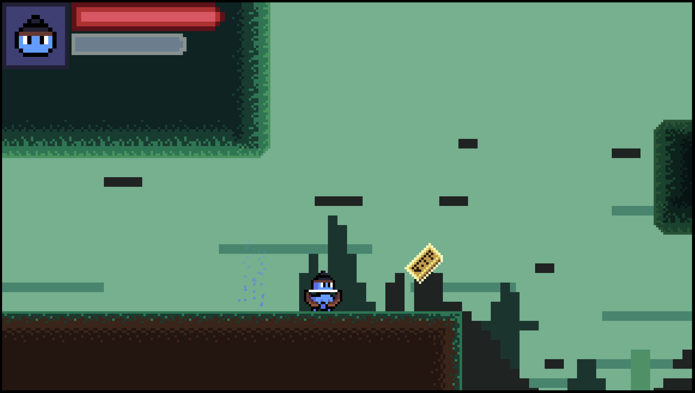

RamaRogue

Short little game made over the course of a few months to practice developing a game in Godot. Originally, I had much more ambitious plans for the game, but I realized quickly that not only were my skills not quite there yet, but also that the core design of the game was far too lackluster for the kind of sweeping platformer "epic" I wanted out of this. I decided to turn it into more of a demo project, with the intention of maybe one day coming back and fleshing it out into a fuller experience.
Despite this however, the project was an incredibly valuable endevour, as I feel like I learned alot about Godot. Compared to by previous experiences with the engine, I have developed a much strong grasp of the software, as well as command a more intermediate understanding of GDScript. Furthermore, this project gave me a lot of opportunities to practice my pixel art. Certain charater assets (for player character and boss) created by BDragon over on itch.io were invaluable references during that process.